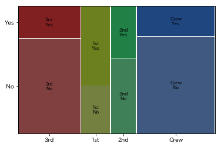
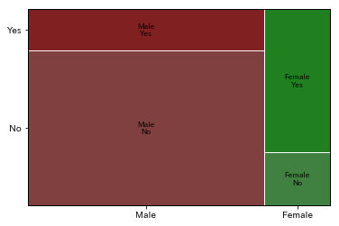

グラフの表示 (visualization)
Contents
グラフの表示 (visualization)¶
データをわかりやすくグラフに表示することができると、データの理解や説明に役立つ。
import numpy as np
import pandas as pd
from statsmodels.graphics.mosaicplot import mosaic
import matplotlib.pyplot as plt
%matplotlib inline
グラフの意味¶
ヒストグラム¶
縦軸に度数 (頻度)、横軸に階級 (値の範囲) をとったグラフである。
データ分布の形や偏りがないかなどを確認するのに利用する。
山が複数ある場合には、性質の異なる複数のグループが混在している可能性がある。
外れ値をどこに設定するか、区間の数をいくつに設定するかなどで印象が全く異なるので、複数表示して確認する。
#関数の説明を表示
help(pd.DataFrame.hist)
Help on function hist_frame in module pandas.plotting._core:
hist_frame(data: 'DataFrame', column: Union[Hashable, NoneType, Sequence[Union[Hashable, NoneType]]] = None, by=None, grid: bool = True, xlabelsize: Union[int, NoneType] = None, xrot: Union[float, NoneType] = None, ylabelsize: Union[int, NoneType] = None, yrot: Union[float, NoneType] = None, ax=None, sharex: bool = False, sharey: bool = False, figsize: Union[Tuple[int, int], NoneType] = None, layout: Union[Tuple[int, int], NoneType] = None, bins: Union[int, Sequence[int]] = 10, backend: Union[str, NoneType] = None, legend: bool = False, **kwargs)
Make a histogram of the DataFrame's.
A `histogram`_ is a representation of the distribution of data.
This function calls :meth:`matplotlib.pyplot.hist`, on each series in
the DataFrame, resulting in one histogram per column.
.. _histogram: https://en.wikipedia.org/wiki/Histogram
Parameters
----------
data : DataFrame
The pandas object holding the data.
column : str or sequence
If passed, will be used to limit data to a subset of columns.
by : object, optional
If passed, then used to form histograms for separate groups.
grid : bool, default True
Whether to show axis grid lines.
xlabelsize : int, default None
If specified changes the x-axis label size.
xrot : float, default None
Rotation of x axis labels. For example, a value of 90 displays the
x labels rotated 90 degrees clockwise.
ylabelsize : int, default None
If specified changes the y-axis label size.
yrot : float, default None
Rotation of y axis labels. For example, a value of 90 displays the
y labels rotated 90 degrees clockwise.
ax : Matplotlib axes object, default None
The axes to plot the histogram on.
sharex : bool, default True if ax is None else False
In case subplots=True, share x axis and set some x axis labels to
invisible; defaults to True if ax is None otherwise False if an ax
is passed in.
Note that passing in both an ax and sharex=True will alter all x axis
labels for all subplots in a figure.
sharey : bool, default False
In case subplots=True, share y axis and set some y axis labels to
invisible.
figsize : tuple
The size in inches of the figure to create. Uses the value in
`matplotlib.rcParams` by default.
layout : tuple, optional
Tuple of (rows, columns) for the layout of the histograms.
bins : int or sequence, default 10
Number of histogram bins to be used. If an integer is given, bins + 1
bin edges are calculated and returned. If bins is a sequence, gives
bin edges, including left edge of first bin and right edge of last
bin. In this case, bins is returned unmodified.
backend : str, default None
Backend to use instead of the backend specified in the option
``plotting.backend``. For instance, 'matplotlib'. Alternatively, to
specify the ``plotting.backend`` for the whole session, set
``pd.options.plotting.backend``.
.. versionadded:: 1.0.0
legend : bool, default False
Whether to show the legend.
.. versionadded:: 1.1.0
**kwargs
All other plotting keyword arguments to be passed to
:meth:`matplotlib.pyplot.hist`.
Returns
-------
matplotlib.AxesSubplot or numpy.ndarray of them
See Also
--------
matplotlib.pyplot.hist : Plot a histogram using matplotlib.
Examples
--------
This example draws a histogram based on the length and width of
some animals, displayed in three bins
.. plot::
:context: close-figs
>>> df = pd.DataFrame({
... 'length': [1.5, 0.5, 1.2, 0.9, 3],
... 'width': [0.7, 0.2, 0.15, 0.2, 1.1]
... }, index=['pig', 'rabbit', 'duck', 'chicken', 'horse'])
>>> hist = df.hist(bins=3)
isl = pd.read_csv('./data/islands.csv', header=None, index_col=0, names=[''])
isl.tail(10)
| South America | 6795 |
|---|---|
| Southampton | 16 |
| Spitsbergen | 15 |
| Sumatra | 183 |
| Taiwan | 14 |
| Tasmania | 26 |
| Tierra del Fuego | 19 |
| Timor | 13 |
| Vancouver | 12 |
| Victoria | 82 |
isl.hist()
array([[<AxesSubplot:>]], dtype=object)
箱ひげ図¶
中央値・四分位点・外れ値を一度に可視化できるグラフである。
四角 (箱) の上下間 = 四分位範囲 (25%点 ~ 75%点)
四角 (箱) の中の線 = 中央値
上下に伸びた線 (ひげ) = 箱の上 (下) から箱の高さの1.5倍を延長した範囲 (データの最小値・最大値は超えない)
上下の点 = 外れ値
pd.DataFrame.boxplot を用いて描画する。
#関数の説明を表示
help(pd.DataFrame.boxplot)
Help on function boxplot_frame in module pandas.plotting._core:
boxplot_frame(self, column=None, by=None, ax=None, fontsize=None, rot=0, grid=True, figsize=None, layout=None, return_type=None, backend=None, **kwargs)
Make a box plot from DataFrame columns.
Make a box-and-whisker plot from DataFrame columns, optionally grouped
by some other columns. A box plot is a method for graphically depicting
groups of numerical data through their quartiles.
The box extends from the Q1 to Q3 quartile values of the data,
with a line at the median (Q2). The whiskers extend from the edges
of box to show the range of the data. By default, they extend no more than
`1.5 * IQR (IQR = Q3 - Q1)` from the edges of the box, ending at the farthest
data point within that interval. Outliers are plotted as separate dots.
For further details see
Wikipedia's entry for `boxplot <https://en.wikipedia.org/wiki/Box_plot>`_.
Parameters
----------
column : str or list of str, optional
Column name or list of names, or vector.
Can be any valid input to :meth:`pandas.DataFrame.groupby`.
by : str or array-like, optional
Column in the DataFrame to :meth:`pandas.DataFrame.groupby`.
One box-plot will be done per value of columns in `by`.
ax : object of class matplotlib.axes.Axes, optional
The matplotlib axes to be used by boxplot.
fontsize : float or str
Tick label font size in points or as a string (e.g., `large`).
rot : int or float, default 0
The rotation angle of labels (in degrees)
with respect to the screen coordinate system.
grid : bool, default True
Setting this to True will show the grid.
figsize : A tuple (width, height) in inches
The size of the figure to create in matplotlib.
layout : tuple (rows, columns), optional
For example, (3, 5) will display the subplots
using 3 columns and 5 rows, starting from the top-left.
return_type : {'axes', 'dict', 'both'} or None, default 'axes'
The kind of object to return. The default is ``axes``.
* 'axes' returns the matplotlib axes the boxplot is drawn on.
* 'dict' returns a dictionary whose values are the matplotlib
Lines of the boxplot.
* 'both' returns a namedtuple with the axes and dict.
* when grouping with ``by``, a Series mapping columns to
``return_type`` is returned.
If ``return_type`` is `None`, a NumPy array
of axes with the same shape as ``layout`` is returned.
backend : str, default None
Backend to use instead of the backend specified in the option
``plotting.backend``. For instance, 'matplotlib'. Alternatively, to
specify the ``plotting.backend`` for the whole session, set
``pd.options.plotting.backend``.
.. versionadded:: 1.0.0
**kwargs
All other plotting keyword arguments to be passed to
:func:`matplotlib.pyplot.boxplot`.
Returns
-------
result
See Notes.
See Also
--------
Series.plot.hist: Make a histogram.
matplotlib.pyplot.boxplot : Matplotlib equivalent plot.
Notes
-----
The return type depends on the `return_type` parameter:
* 'axes' : object of class matplotlib.axes.Axes
* 'dict' : dict of matplotlib.lines.Line2D objects
* 'both' : a namedtuple with structure (ax, lines)
For data grouped with ``by``, return a Series of the above or a numpy
array:
* :class:`~pandas.Series`
* :class:`~numpy.array` (for ``return_type = None``)
Use ``return_type='dict'`` when you want to tweak the appearance
of the lines after plotting. In this case a dict containing the Lines
making up the boxes, caps, fliers, medians, and whiskers is returned.
Examples
--------
Boxplots can be created for every column in the dataframe
by ``df.boxplot()`` or indicating the columns to be used:
.. plot::
:context: close-figs
>>> np.random.seed(1234)
>>> df = pd.DataFrame(np.random.randn(10, 4),
... columns=['Col1', 'Col2', 'Col3', 'Col4'])
>>> boxplot = df.boxplot(column=['Col1', 'Col2', 'Col3'])
Boxplots of variables distributions grouped by the values of a third
variable can be created using the option ``by``. For instance:
.. plot::
:context: close-figs
>>> df = pd.DataFrame(np.random.randn(10, 2),
... columns=['Col1', 'Col2'])
>>> df['X'] = pd.Series(['A', 'A', 'A', 'A', 'A',
... 'B', 'B', 'B', 'B', 'B'])
>>> boxplot = df.boxplot(by='X')
A list of strings (i.e. ``['X', 'Y']``) can be passed to boxplot
in order to group the data by combination of the variables in the x-axis:
.. plot::
:context: close-figs
>>> df = pd.DataFrame(np.random.randn(10, 3),
... columns=['Col1', 'Col2', 'Col3'])
>>> df['X'] = pd.Series(['A', 'A', 'A', 'A', 'A',
... 'B', 'B', 'B', 'B', 'B'])
>>> df['Y'] = pd.Series(['A', 'B', 'A', 'B', 'A',
... 'B', 'A', 'B', 'A', 'B'])
>>> boxplot = df.boxplot(column=['Col1', 'Col2'], by=['X', 'Y'])
The layout of boxplot can be adjusted giving a tuple to ``layout``:
.. plot::
:context: close-figs
>>> boxplot = df.boxplot(column=['Col1', 'Col2'], by='X',
... layout=(2, 1))
Additional formatting can be done to the boxplot, like suppressing the grid
(``grid=False``), rotating the labels in the x-axis (i.e. ``rot=45``)
or changing the fontsize (i.e. ``fontsize=15``):
.. plot::
:context: close-figs
>>> boxplot = df.boxplot(grid=False, rot=45, fontsize=15)
The parameter ``return_type`` can be used to select the type of element
returned by `boxplot`. When ``return_type='axes'`` is selected,
the matplotlib axes on which the boxplot is drawn are returned:
>>> boxplot = df.boxplot(column=['Col1', 'Col2'], return_type='axes')
>>> type(boxplot)
<class 'matplotlib.axes._subplots.AxesSubplot'>
When grouping with ``by``, a Series mapping columns to ``return_type``
is returned:
>>> boxplot = df.boxplot(column=['Col1', 'Col2'], by='X',
... return_type='axes')
>>> type(boxplot)
<class 'pandas.core.series.Series'>
If ``return_type`` is `None`, a NumPy array of axes with the same shape
as ``layout`` is returned:
>>> boxplot = df.boxplot(column=['Col1', 'Col2'], by='X',
... return_type=None)
>>> type(boxplot)
<class 'numpy.ndarray'>
ins = pd.read_csv('./data/InsectSprays.csv')
ins.tail()
| count | spray | |
|---|---|---|
| 67 | 10 | F |
| 68 | 26 | F |
| 69 | 26 | F |
| 70 | 24 | F |
| 71 | 13 | F |
ins.boxplot(by='spray')
<AxesSubplot:title={'center':'count'}, xlabel='[spray]'>
棒グラフ (bar plot)¶
pd.DataFrame.plot.bar を用いて描画する。
#関数の説明を表示
help(pd.DataFrame.plot.bar)
Help on function bar in module pandas.plotting._core:
bar(self, x=None, y=None, **kwargs)
Vertical bar plot.
A bar plot is a plot that presents categorical data with
rectangular bars with lengths proportional to the values that they
represent. A bar plot shows comparisons among discrete categories. One
axis of the plot shows the specific categories being compared, and the
other axis represents a measured value.
Parameters
----------
x : label or position, optional
Allows plotting of one column versus another. If not specified,
the index of the DataFrame is used.
y : label or position, optional
Allows plotting of one column versus another. If not specified,
all numerical columns are used.
color : str, array_like, or dict, optional
The color for each of the DataFrame's columns. Possible values are:
- A single color string referred to by name, RGB or RGBA code,
for instance 'red' or '#a98d19'.
- A sequence of color strings referred to by name, RGB or RGBA
code, which will be used for each column recursively. For
instance ['green','yellow'] each column's bar will be filled in
green or yellow, alternatively.
- A dict of the form {column name : color}, so that each column will be
colored accordingly. For example, if your columns are called `a` and
`b`, then passing {'a': 'green', 'b': 'red'} will color bars for
column `a` in green and bars for column `b` in red.
.. versionadded:: 1.1.0
**kwargs
Additional keyword arguments are documented in
:meth:`DataFrame.plot`.
Returns
-------
matplotlib.axes.Axes or np.ndarray of them
An ndarray is returned with one :class:`matplotlib.axes.Axes`
per column when ``subplots=True``.
See Also
--------
DataFrame.plot.barh : Horizontal bar plot.
DataFrame.plot : Make plots of a DataFrame.
matplotlib.pyplot.bar : Make a bar plot with matplotlib.
Examples
--------
Basic plot.
.. plot::
:context: close-figs
>>> df = pd.DataFrame({'lab':['A', 'B', 'C'], 'val':[10, 30, 20]})
>>> ax = df.plot.bar(x='lab', y='val', rot=0)
Plot a whole dataframe to a bar plot. Each column is assigned a
distinct color, and each row is nested in a group along the
horizontal axis.
.. plot::
:context: close-figs
>>> speed = [0.1, 17.5, 40, 48, 52, 69, 88]
>>> lifespan = [2, 8, 70, 1.5, 25, 12, 28]
>>> index = ['snail', 'pig', 'elephant',
... 'rabbit', 'giraffe', 'coyote', 'horse']
>>> df = pd.DataFrame({'speed': speed,
... 'lifespan': lifespan}, index=index)
>>> ax = df.plot.bar(rot=0)
Plot stacked bar charts for the DataFrame
.. plot::
:context: close-figs
>>> ax = df.plot.bar(stacked=True)
Instead of nesting, the figure can be split by column with
``subplots=True``. In this case, a :class:`numpy.ndarray` of
:class:`matplotlib.axes.Axes` are returned.
.. plot::
:context: close-figs
>>> axes = df.plot.bar(rot=0, subplots=True)
>>> axes[1].legend(loc=2) # doctest: +SKIP
If you don't like the default colours, you can specify how you'd
like each column to be colored.
.. plot::
:context: close-figs
>>> axes = df.plot.bar(
... rot=0, subplots=True, color={"speed": "red", "lifespan": "green"}
... )
>>> axes[1].legend(loc=2) # doctest: +SKIP
Plot a single column.
.. plot::
:context: close-figs
>>> ax = df.plot.bar(y='speed', rot=0)
Plot only selected categories for the DataFrame.
.. plot::
:context: close-figs
>>> ax = df.plot.bar(x='lifespan', rot=0)
va = pd.read_csv('./data/VADeaths.csv', index_col=0)
va
| Rural Male | Rural Female | Urban Male | Urban Female | |
|---|---|---|---|---|
| 50-54 | 11.7 | 8.7 | 15.4 | 8.4 |
| 55-59 | 18.1 | 11.7 | 24.3 | 13.6 |
| 60-64 | 26.9 | 20.3 | 37.0 | 19.3 |
| 65-69 | 41.0 | 30.9 | 54.6 | 35.1 |
| 70-74 | 66.0 | 54.3 | 71.1 | 50.0 |
va.plot.bar()
<AxesSubplot:>
va.plot.bar(stacked=True)
<AxesSubplot:>
モザイク図 (mosaic plot)¶
数値の大きさを面性で表すプロットである。
クロス集計表の視覚化などに利用される。
statsmodels.graphics.mosaicplot.mosaic を用いる。
#関数の説明を表示
help(mosaic)
Help on function mosaic in module statsmodels.graphics.mosaicplot:
mosaic(data, index=None, ax=None, horizontal=True, gap=0.005, properties=<function <lambda> at 0x172c99280>, labelizer=None, title='', statistic=False, axes_label=True, label_rotation=0.0)
Create a mosaic plot from a contingency table.
It allows to visualize multivariate categorical data in a rigorous
and informative way.
Parameters
----------
data : {dict, Series, ndarray, DataFrame}
The contingency table that contains the data.
Each category should contain a non-negative number
with a tuple as index. It expects that all the combination
of keys to be represents; if that is not true, will
automatically consider the missing values as 0. The order
of the keys will be the same as the one of insertion.
If a dict of a Series (or any other dict like object)
is used, it will take the keys as labels. If a
np.ndarray is provided, it will generate a simple
numerical labels.
index : list, optional
Gives the preferred order for the category ordering. If not specified
will default to the given order. It does not support named indexes
for hierarchical Series. If a DataFrame is provided, it expects
a list with the name of the columns.
ax : Axes, optional
The graph where display the mosaic. If not given, will
create a new figure
horizontal : bool, optional
The starting direction of the split (by default along
the horizontal axis)
gap : {float, sequence[float]}
The list of gaps to be applied on each subdivision.
If the length of the given array is less of the number
of subcategories (or if it's a single number) it will extend
it with exponentially decreasing gaps
properties : dict[str, callable], optional
A function that for each tile in the mosaic take the key
of the tile and returns the dictionary of properties
of the generated Rectangle, like color, hatch or similar.
A default properties set will be provided fot the keys whose
color has not been defined, and will use color variation to help
visually separates the various categories. It should return None
to indicate that it should use the default property for the tile.
A dictionary of the properties for each key can be passed,
and it will be internally converted to the correct function
labelizer : dict[str, callable], optional
A function that generate the text to display at the center of
each tile base on the key of that tile
title : str, optional
The title of the axis
statistic : bool, optional
If true will use a crude statistical model to give colors to the plot.
If the tile has a constraint that is more than 2 standard deviation
from the expected value under independence hypothesis, it will
go from green to red (for positive deviations, blue otherwise) and
will acquire an hatching when crosses the 3 sigma.
axes_label : bool, optional
Show the name of each value of each category
on the axis (default) or hide them.
label_rotation : {float, list[float]}
The rotation of the axis label (if present). If a list is given
each axis can have a different rotation
Returns
---------
fig : Figure
The figure containing the plot.
rects : dict
A dictionary that has the same keys of the original
dataset, that holds a reference to the coordinates of the
tile and the Rectangle that represent it.
References
----------
A Brief History of the Mosaic Display
Michael Friendly, York University, Psychology Department
Journal of Computational and Graphical Statistics, 2001
Mosaic Displays for Loglinear Models.
Michael Friendly, York University, Psychology Department
Proceedings of the Statistical Graphics Section, 1992, 61-68.
Mosaic displays for multi-way contingency tables.
Michael Friendly, York University, Psychology Department
Journal of the american statistical association
March 1994, Vol. 89, No. 425, Theory and Methods
Examples
----------
>>> import numpy as np
>>> import pandas as pd
>>> import matplotlib.pyplot as plt
>>> from statsmodels.graphics.mosaicplot import mosaic
The most simple use case is to take a dictionary and plot the result
>>> data = {'a': 10, 'b': 15, 'c': 16}
>>> mosaic(data, title='basic dictionary')
>>> plt.show()
A more useful example is given by a dictionary with multiple indices.
In this case we use a wider gap to a better visual separation of the
resulting plot
>>> data = {('a', 'b'): 1, ('a', 'c'): 2, ('d', 'b'): 3, ('d', 'c'): 4}
>>> mosaic(data, gap=0.05, title='complete dictionary')
>>> plt.show()
The same data can be given as a simple or hierarchical indexed Series
>>> rand = np.random.random
>>> from itertools import product
>>> tuples = list(product(['bar', 'baz', 'foo', 'qux'], ['one', 'two']))
>>> index = pd.MultiIndex.from_tuples(tuples, names=['first', 'second'])
>>> data = pd.Series(rand(8), index=index)
>>> mosaic(data, title='hierarchical index series')
>>> plt.show()
The third accepted data structure is the np array, for which a
very simple index will be created.
>>> rand = np.random.random
>>> data = 1+rand((2,2))
>>> mosaic(data, title='random non-labeled array')
>>> plt.show()
If you need to modify the labeling and the coloring you can give
a function tocreate the labels and one with the graphical properties
starting from the key tuple
>>> data = {'a': 10, 'b': 15, 'c': 16}
>>> props = lambda key: {'color': 'r' if 'a' in key else 'gray'}
>>> labelizer = lambda k: {('a',): 'first', ('b',): 'second',
... ('c',): 'third'}[k]
>>> mosaic(data, title='colored dictionary', properties=props,
... labelizer=labelizer)
>>> plt.show()
Using a DataFrame as source, specifying the name of the columns of interest
>>> gender = ['male', 'male', 'male', 'female', 'female', 'female']
>>> pet = ['cat', 'dog', 'dog', 'cat', 'dog', 'cat']
>>> data = pd.DataFrame({'gender': gender, 'pet': pet})
>>> mosaic(data, ['pet', 'gender'], title='DataFrame as Source')
>>> plt.show()
.. plot :: plots/graphics_mosaicplot_mosaic.py
titanic = pd.read_csv('./data/titanic.csv')
titanic.tail()
| Class | Sex | Age | Survived | |
|---|---|---|---|---|
| 2197 | Crew | Female | Adult | Yes |
| 2198 | Crew | Female | Adult | Yes |
| 2199 | Crew | Female | Adult | Yes |
| 2200 | Crew | Female | Adult | Yes |
| 2201 | Crew | Female | Adult | Yes |
mosaic(titanic, ['Class', 'Survived'])
plt.show()

mosaic(titanic, ['Sex', 'Survived'])
plt.show()
